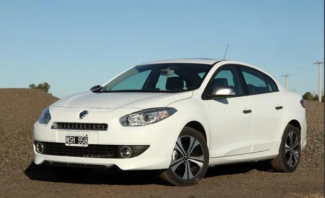
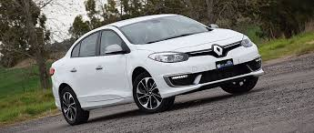
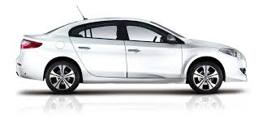
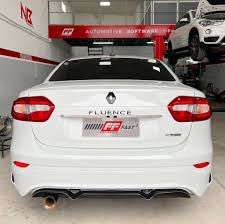
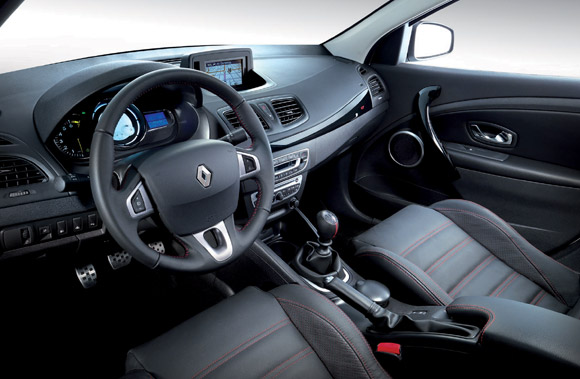
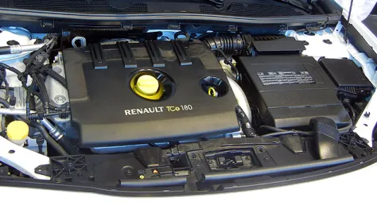

Tu concesionaria de confianza en Córdoba
$ 7.500.000






| Motor | 2.0L 16V 140 cv |
| Combustible | Nafta |
| Transmisión | CVT automática (6 velocidades) |
| Consumo ciudad | 10.5 litros / 100 km |
| Consumo ruta | 7.8 litros / 100 km |
| Velocidad máxima | 210 km/h |
| Kilometraje | 98.000 km |
| Color | Gris oscuro metalizado |
| Equipamiento |
- Aire acondicionado automático - Airbags frontales y laterales - ABS + EBD - Control de estabilidad (ESP) - Pantalla táctil 7" - Bluetooth / USB - Alzavidrios eléctricos 4 puertas - Cierre centralizado - Llantas de aleación 17" |
| Dueños anteriores | 1 solo dueño |
| Estado general | Muy bueno — sin choques, sin rayones importantes |
| Papeles | Al día, libre de multas e inhibiciones |